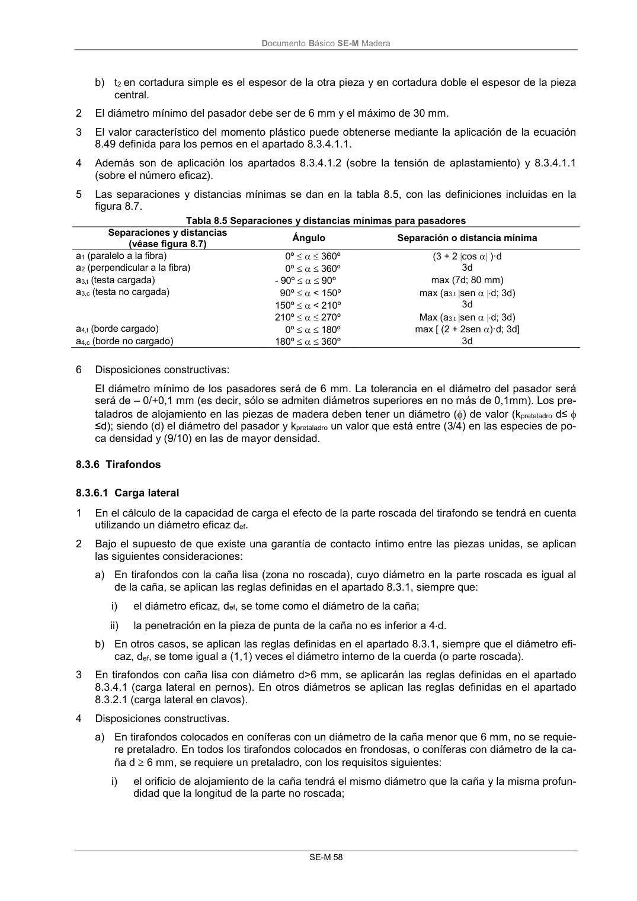

DB-SE-M · 8.3.6 Tirafondos · 8.3.6.1 Carga lateral · versión 2019-12-20
SHA256: 26b5819839ebfda78b0b119c5e76a0a37773b0d763c05688541870075df93718 · página física 64 de 132 · métodos de encabezado
solo si están cotejados.
Formatos: Markdown · JSON de bloques · PDF p. 64 · imagen PNG
Documento Básico SE-M Madera
SE-M 58
b) t2 en cortadura simple es el espesor de la otra pieza y en cortadura doble el espesor de la pieza
central.
2
El diámetro mínimo del pasador debe ser de 6 mm y el máximo de 30 mm.
3
El valor característico del momento plástico puede obtenerse mediante la aplicación de la ecuación
8.49 definida para los pernos en el apartado 8.3.4.1.1.
4
Además son de aplicación los apartados 8.3.4.1.2 (sobre la tensión de aplastamiento) y 8.3.4.1.1
(sobre el número eficaz).
5
Las separaciones y distancias mínimas se dan en la tabla 8.5, con las definiciones incluidas en la
figura 8.7.
Tabla 8.5 Separaciones y distancias mínimas para pasadores
Separaciones y distancias
(véase figura 8.7)
Ángulo
Separación o distancia mínima
a1 (paralelo a la fibra)
0º 360º
(3 + 2 cos )·d
a2 (perpendicular a la fibra)
0º 360º
3d
a3,t (testa cargada)
- 90º 90º
max (7d; 80 mm)
a3,c (testa no cargada)
90º < 150º
max (a3,t sen d; 3d)
150º < 210º
3d
210º 270º
Max (a3,t sen d; 3d)
a4,t (borde cargado)
0º 180º
max [ (2 + 2sen )·d; 3d]
a4,c (borde no cargado)
180º 360º
3d
6
Disposiciones constructivas:
El diámetro mínimo de los pasadores será de 6 mm. La tolerancia en el diámetro del pasador será
será de – 0/+0,1 mm (es decir, sólo se admiten diámetros superiores en no más de 0,1mm). Los pre-
taladros de alojamiento en las piezas de madera deben tener un diámetro () de valor (kpretaladro d≤
≤d); siendo (d) el diámetro del pasador y kpretaladro un valor que está entre (3/4) en las especies de po-
ca densidad y (9/10) en las de mayor densidad.
8.3.6 Tirafondos
8.3.6.1 Carga lateral
1
En el cálculo de la capacidad de carga el efecto de la parte roscada del tirafondo se tendrá en cuenta
utilizando un diámetro eficaz def.
2
Bajo el supuesto de que existe una garantía de contacto íntimo entre las piezas unidas, se aplican
las siguientes consideraciones:
a) En tirafondos con la caña lisa (zona no roscada), cuyo diámetro en la parte roscada es igual al
de la caña, se aplican las reglas definidas en el apartado 8.3.1, siempre que:
i)
el diámetro eficaz, def, se tome como el diámetro de la caña;
ii)
la penetración en la pieza de punta de la caña no es inferior a 4d.
b) En otros casos, se aplican las reglas definidas en el apartado 8.3.1, siempre que el diámetro efi-
caz, def, se tome igual a (1,1) veces el diámetro interno de la cuerda (o parte roscada).
3
En tirafondos con caña lisa con diámetro d>6 mm, se aplicarán las reglas definidas en el apartado
8.3.4.1 (carga lateral en pernos). En otros diámetros se aplican las reglas definidas en el apartado
8.3.2.1 (carga lateral en clavos).
4
Disposiciones constructivas.
a) En tirafondos colocados en coníferas con un diámetro de la caña menor que 6 mm, no se requie-
re pretaladro. En todos los tirafondos colocados en frondosas, o coníferas con diámetro de la ca-
ña d 6 mm, se requiere un pretaladro, con los requisitos siguientes:
i)
el orificio de alojamiento de la caña tendrá el mismo diámetro que la caña y la misma profun-
didad que la longitud de la parte no roscada;
